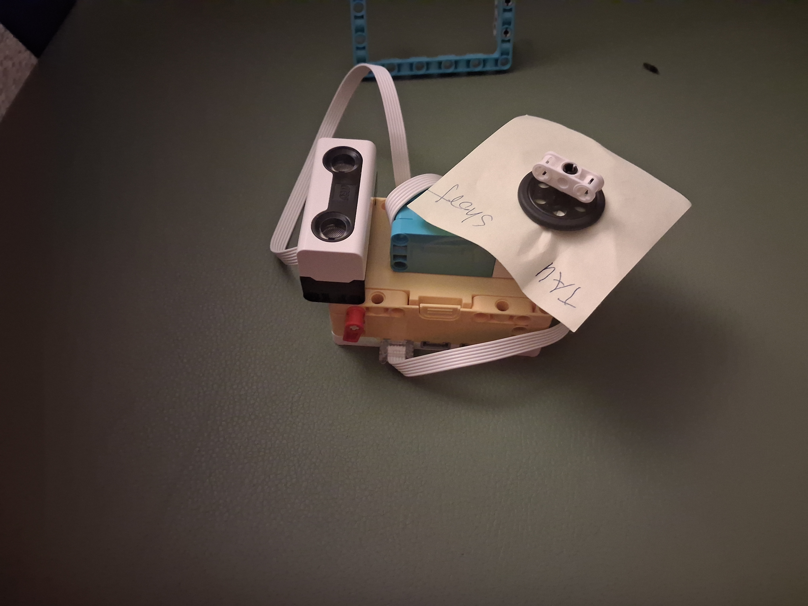
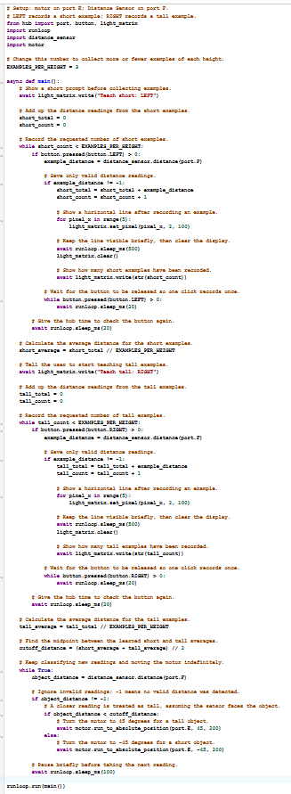

Project Portfolio

# Project 11: High-or-Low
This project uses a LEGO SPIKE distance sensor to detect whether an object is closer or farther away. The program repeatedly reads the distance, checks it against a threshold, and then responds based on whether the reading is high or low.
The logic shown in the code is a simple example of using sensor input to create a clear decision. The distance is sampled repeatedly, and the result is evaluated to decide which branch of the program should run next.
Distance sensor comparison logic
